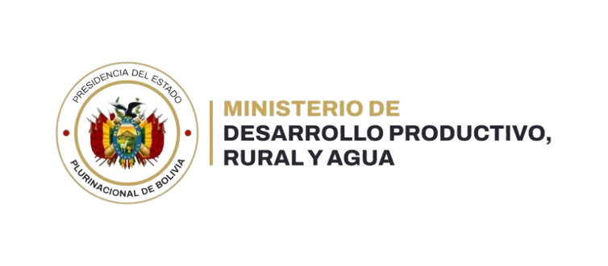

SEI - SENAMHI



La cuenca del río Acre es una importante región amazónica compartida por Bolivia, Brasil y Perú, con una superficie aproximada de 7.182 km² en el área de estudio. El río Acre nace en las estribaciones andinas del sureste de Perú, cerca de la frontera con Bolivia, y recorre alrededor de 645 kilómetros antes de desembocar en el río Purús. En su tramo inicial, forma parte de la frontera entre Bolivia y Brasil. La cuenca se caracteriza por extensas planicies y suaves colinas, con altitudes que varían entre 177 y 413 metros sobre el nivel del mar, lo que favorece la presencia de humedales, la recarga de aguas subterráneas y una gran riqueza de flora y fauna. Su clima tropical húmedo genera lluvias abundantes durante gran parte del año, provocando crecidas estacionales e inundaciones recurrentes, especialmente en las ciudades de Cobija (Bolivia), Brasiléia y Epitaciolândia (Brasil), donde la cercanía de la población al río incrementa la exposición a estos eventos. Por su importancia para el abastecimiento de agua, la conservación de los ecosistemas amazónicos y la gestión del riesgo de inundaciones, la cuenca del río Acre constituye un territorio estratégico para la cooperación y el desarrollo sostenible entre los tres países que la comparten.